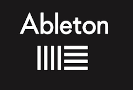

Hello, my name is Connor Welch. I am currently studying to become a computer scientist. My passions however do not stop with computers. I have played multiple instruments throughout my life and music has become a large part of who I am. Being interested in both computers and music I have naturally been drawn to electronic music, music made by means of a computer and/or electronic hardware like a synthesizer. I am currently training myself as an electronic music producer. The software that I work in is called Ableton Live, which is a Digital Audio Workstation (DAW). One of my favorite things to do as an electronic music producer is sound design which is the manipulation of sound waves to create interesting sounds. It's amazing what you can create starting with just a simple sine wave. One day I hope to use my skills as a computer scientist to make DAW's and other types of software music technologies such as sofware synthesizers.
One of the best teachers for sound design is SeamlessR he has made multiple videos on the craft that is sound design. This is one of his videos on FM synthesis.
Some of the websites I like to visit that involve music production are Dubstep Forum and Reddit Link to Dubstep Forum. Link to Reddit Electronic Dance Music Production.
